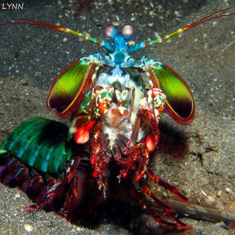
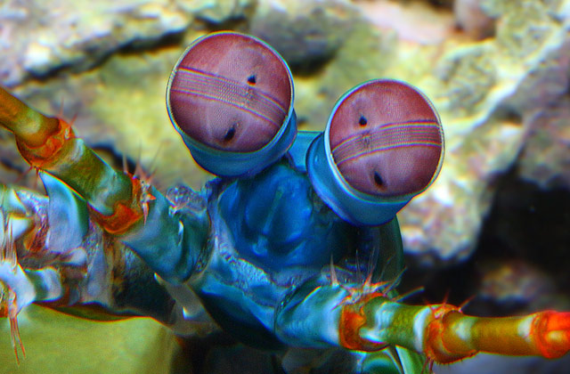
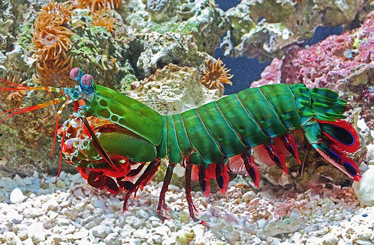

Informações Gerais
| Nome científico: | Odontodactylus scyllarus |
| Reino: | Animalia |
| Filo: | Arthropoda |
| Subfilo: | Crustacea |
| Classe: | Malacostraca |
| Subclasse: | Hoplocarida |
| Ordem: | Stomatopoda Latreille,1817 |
| Nome científico: | Odontodactylus scyllarus |
| Reino: | Animalia |
| Filo: | Arthropoda |
| Subfilo: | Crustacea |
| Classe: | Malacostraca |
| Subclasse: | Hoplocarida |
| Ordem: | Stomatopoda Latreille,1817 |
Esses animais possuem o mais complexo sistema de visão de cores do mundo animal, pois possuem 16 cones, sendo doze cones sensíveis á luz e outros quatro que filtram a luz, com isso enxergam 12 cores primárias, correspondentes aos 12 pigmentos distintos presentes em sua retina, além de permitir ver cores polarizadas e imagens multiespectrais.
São capazes de desferir um dos mais rápidos e violentos golpes do reino animal, um soco que pode apresentar a velocidade de um tiro calibre .22 (equivalente a 720 km/h) e uma pressão de impacto de 600 N/cm².Podem chegar até aproximadamente 40 cm de tamanho nas espécies maiores.

O segundo par de patas, muito desenvolvido, é usado tanto para atacar a presa como para se defender. O urópodo, quando aberto, também funciona para defesa, como um escudo, fechando a galeria em que o animal esteja instalado, transformando sua estrutura em uma armadura muito poderosa.

As características do Stomatopoda fazem com que seja um dos animais mais bonitos e exóticos, porém uma curiosidade é que não são permitidos em Áquarios, já que os mesmos matam qualquer ser vivo que estiver no seu habitat e eles podem quebrar o vidro do áquario!
